自动配置隐含两层含义，要搞清楚
上帝让程序员的发量减少，是为了让他变得更聪明，如果有一天聪明到了极点，那就是绝顶聪明。
据说在大脑高速运转下，这样更有利于散热，不至于核心温度过高而产生告警。
聪明的大脑是用来思考的，现在就来深入思考和分析下自动配置。
自动配置包含两层意思，一个是配置，一个是自动。这不废话嘛。
配置存在的一个前提是，要有选择才行，如果没得选择，就不用谈配置了。
比如十几年前读大学时，无论是回家还是去学校，都只能坐最便宜的硬座。因为没得选择。
现在情况就不一样了，高铁、动车、飞机都可以了。有了选择，就可以谈配置了。
所以配置就是在一些可选项里做出选择，既然是选择，就需要有选择的依据/理由。
如果距离不太远的话，选择高铁，这样在花费的时间和金钱上是相对均衡的。
如果此时想稍微省点钱的话，选择动车，不过花的时间稍多些。也算一种取舍吧。
如果距离太远的话，选择飞机，这样时间和金钱上才是最均衡的。
这些列举出来的影响选择的因素，其实就是“条件”。因此，配置就是根据条件做出选择。
那自动的意思就是，使用工具或一套程序根据条件做出选择，最后只把结果告诉我们即可。
就是说，我们不参与选择的过程，我们只需提供一些和“条件”相关的信息即可。
Spring的风格，万物皆可注解
通过上一小节，我们成功的把自动配置转化为条件和工具。
回到程序里，条件指的是什么？如果不知道的话，那条件语句指的是什么？
就是if...else，要根据条件做出判断，所以条件就是某种形式的程序代码。
那工具呢？就是一些常用代码或算法的集合嘛。也是某种形式的程序代码。
条件和工具已经被成功的转化为了程序代码，现在来看，自动配置就等于程序代码。
关键是这个程序代码是让我们来写吗？如果是的话，那可就产生悖论了。
因为配置通常意味着不写代码，如果还要写代码的话，那就不叫配置了，叫搞笑了。
因此，条件和工具的程序代码，SpringBoot都写好了，并通过注解进行了封装。
最后把这些注解暴露出来，供用户使用，这就是条件注解的由来。
用户可以通过设置注解属性把“条件”相关信息传递进去，让底层的“工具”进行判断和选择。
最终，不同的条件产生了不同的行为，达到了自动配置的目的。
官方提供的常用条件注解
因为Spring的核心是基于bean的，所以这些条件注解主要是影响bean的注册。
因为注册的bean不同了，最后对外呈现的行为就不同了。不就是自动配置了。
一、最常用的应该是@Profile注解了
根据不同的环境可以注册不同的bean，如下图01：
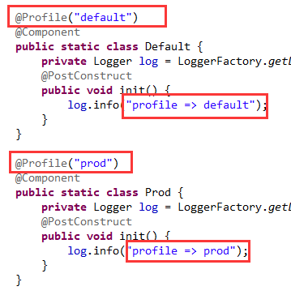
首先，不激活任何环境，执行一下，结果如下图02：
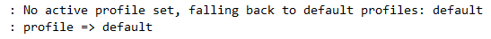
可以看到，没有激活任何环境，所以默认是default。因此Default类就被注册了。
然后，激活一下prod环境，在IDE里设置一下，如下图03：
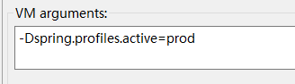
再次运行一下，结果如下图04：
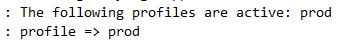
可以看到，prod环境被激活了，所以Prod类就被注册了。
SpringBoot内置了一些注解，如下图05：
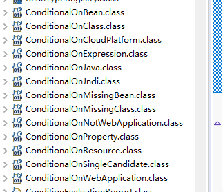
我们关注一些常用的就可以了。
二、@ConditionalOnProperty注解
这个注解用于检测Environment中的指定属性是否存在或等于某个指定的值。
如下图06：
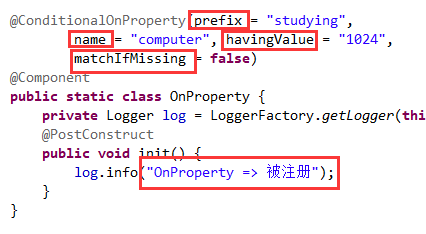
如havingValue属性没有指定的话，那么只要实际属性值不等于false，都算匹配成功。如果指定了，那就必须要一样才行。
matchIfMissing属性就是说，如果没有发现这个属性，算不算匹配上，设置为true就算，false就不算，默认为不算。
请看配置文件，如下图07：
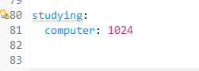
很明显，这是可以匹配上的，运行一下，结果如下图08：
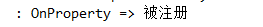
可以看到，对应的类被注册了bean定义。
三、@ConditionalOnClass注解
这个注解用于检测类路径里是否包含某个类，其实就是确定是否引入了指定的依赖。
如下图09：
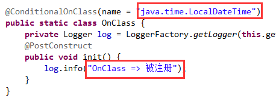
因为我用的JDK1.8，肯定有这个类，所以会匹配上，结果如下图10：
注：@ConditionalOnMissingClass注解原理一样，只不过是否定性的匹配而已。
四、@ConditionalOnBean注解
这个注解用于检测容器中是否包含指定的bean。如下图11：
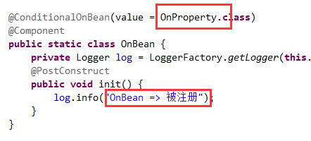
除了可以用Class<?>指定bean外，还可以使用类的全名称，还可以使用bean名称（即beanName）。
还可以使用注解指定是否包含标有该注解的bean。
示例中是通过Class<?>来指定的，而且指定的是之前注册过的bean，所以一定能匹配上。
执行结果如下图12：
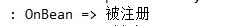
注：@ConditionalOnMissingBean注解原理一样，只不过是否定性的匹配而已。
五、@ConditionalOnSingleCandidate注解
这个注解用于检测容器中能够匹配上的候选bean是否只有一个。
只有一个是什么意思呢？就是某个类只注册了一次，这时就是只有一个。比如Boss类。
但是员工可以有多个，所以就会有多个Staff类被注册。此时就不满足条件了。
如果此时还想满足的话，就必须在其中一个Staff类注册时标上@Primary注解。
如下图13：
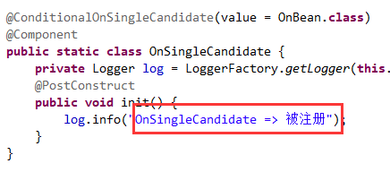
因为我们指定的bean只注册了一次，所以一定满足条件。
执行结果如下图14：
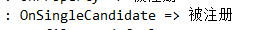
六、@ConditionalOnResource注解
这个注解用于检测类路径中是否包含指定的资源。一般也就是文件了。
我们来检测下配置文件，如下图15：
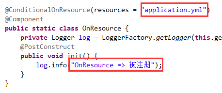
肯定是存在的，执行结果如下图16：
自定义条件注解
需要实现一个条件接口，如下图17：
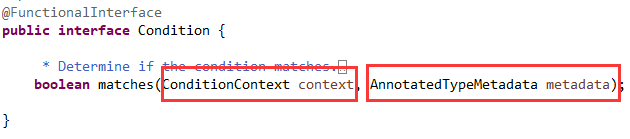
只有一个方法，返回true表示匹配上，false则相反。
方法的第一个参数，是一个上下文，如下图18：
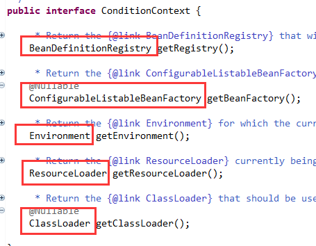
这里有很多的东西供我们使用。
方法的第二个参数，是最终标有我们定义好的条件注解的那个类，这个一定要明白。
我们来定义两个和操作系统对应的注解，一个用于Windows，一个用于Linux。
Windows版本的实现，如下图19：
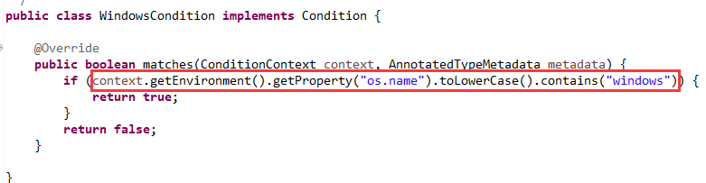
从Environment中读出操作系统的名称，看是否包含windows即可。
Linux版本的实现，如下图20：
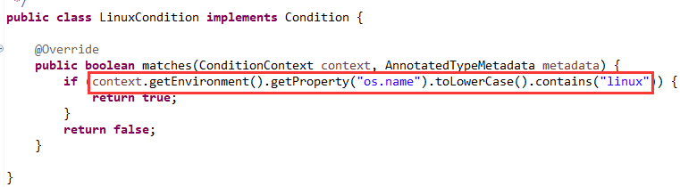
原理和刚刚的一样。
再定义两个注解，分别和这两个条件实现类关联起来。
Windows版本的，如下图21
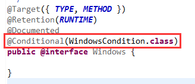
Linux版本的，如下图22：
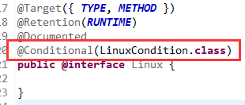
然后开始试用一下这两个条件注解，如下图23：
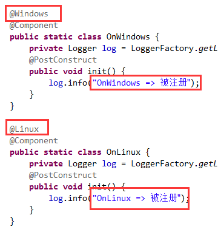
因为我用的是Windows，所以肯定只有@Windows注解可以匹配。
执行结果如下图24：
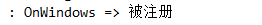
这只是一个简单的示例，可以根据自己的需要定义更加复杂的，但是原理和流程都是一样的。
>>> 玩转SpringBoot系列文章 <<<
>>> 品Spring系列文章 <<<
品Spring：SpringBoot和Spring到底有没有本质的不同？
品Spring：SpringBoot轻松取胜bean定义注册的“第一阶段”
品Spring：SpringBoot发起bean定义注册的“二次攻坚战”
品Spring：注解之王@Configuration和它的一众“小弟们”
品Spring：对@PostConstruct和@PreDestroy注解的处理方法
品Spring：对@Autowired和@Value注解的处理方法
品Spring：真没想到，三十步才能完成一个bean实例的创建
品Spring：关于@Scheduled定时任务的思考与探索，结果尴尬了
>>> 热门文章集锦 <<<
爸爸又给Spring MVC生了个弟弟叫Spring WebFlux
【面试】吃透了这些Redis知识点，面试官一定觉得你很NB（干货 | 建议珍藏）
【面试】如果你这样回答“什么是线程安全”，面试官都会对你刮目相看（建议珍藏）
【面试】迄今为止把同步/异步/阻塞/非阻塞/BIO/NIO/AIO讲的这么清楚的好文章（快快珍藏）
【面试】一篇文章帮你彻底搞清楚“I/O多路复用”和“异步I/O”的前世今生（深度好文，建议珍藏）
作者是工作超过10年的码农，现在任架构师。喜欢研究技术，崇尚简单快乐。追求以通俗易懂的语言解说技术，希望所有的读者都能看懂并记住。下面是公众号的二维码，欢迎关注！